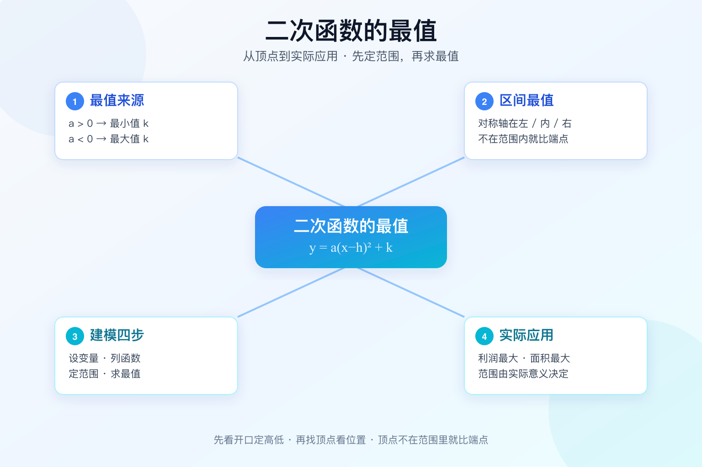

Gallery 初中数学 · 九年级
同样进价的商品，卖贵了没人买，卖便宜了不赚钱——定价多少，利润最大？

选一个你关心的问题，后面的内容会围绕它展开。
选择或输入后，本课会围绕你的问题展开。
你已经会：把 y=ax²+bx+c 配方成 y=a(x-h)²+k，也能说出顶点是 (h,k)。
但问题是：题目问“定价多少利润最大”，你算出顶点 x=100，却不知道自己能不能直接用——这个价格可能已经超出“销量不能为负”的范围。
所以这节课：把最值拆成两步。第一步看顶点在不在自变量范围内，第二步决定取顶点还是取端点。会了这两步，利润、面积、拱高都是同一套。
y = -(x-3)² + 5
把式子化成顶点式 y=a(x-h)²+k 后，平方项 (x-h)² 永远大于等于 0，所以：
顶点是最低点，函数有最小值 k，在 x=h 处取到。
顶点是最高点，函数有最大值 k，在 x=h 处取到。
配方两步：先把 a 提出来，再配成完全平方。例：2x²-8x+5 = 2(x-2)²-3，最小值 -3。
题目常常限定自变量范围，比如 2 ≤ x ≤ 4。这时先算对称轴，再判断它落在区间的左边、里面、还是右边。
f(x) = x² - 2x + 3 = (x-1)² + 2，对称轴 x = 1
| 区间 | 对称轴位置 | 单调性 | 最小值 | 最大值 |
|---|---|---|---|---|
| [2, 4] | 在区间左侧 | 一直递增 | f(2)=3 | f(4)=11 |
| [-1, 2] | 在区间内部 | 先减后增 | f(1)=2 | f(-1)=6 |
| [-3, -1] | 在区间右侧 | 一直递减 | f(-1)=6 | f(-3)=18 |
设自变量，写清单位。例：设售价为 x 元。
用 x 表示题目要求的量，写出二次函数。
由实际意义定出 x 的取值范围（销量非负、长度为正）。
在范围内求最值：顶点在里面取顶点，不在就取端点。
某商品进价 40 元/件。售价 60 元时每天卖 200 件；售价每涨 1 元，每天少卖 2 件。
① 设：售价 x 元（x ≥ 60）。
② 列：单件利润 x-40，销量 200-2(x-60)=320-2x。
w = (x-40)(320-2x) = -2x² + 400x - 12800
③ 定：销量不能为负，320-2x ≥ 0，得 60 ≤ x ≤ 160。
④ 求：对称轴 x=-b/(2a)=400/4=100，落在范围内，所以
w(100)=60×120=7200（元）。
一面靠墙，另外三面用 24 米篱笆围成矩形。设垂直于墙的边长 x 米。
① 设：宽 x 米，则平行于墙的边长 24-2x 米。
② 列：S=x(24-2x)=-2x²+24x。
③ 定：边长必须为正，x>0 且 24-2x>0，得 0<x<12。
④ 求：对称轴 x=6，在范围内，S(6)=6×12=72。
注意：这里的范围是开区间，端点取不到，所以不能把端点当答案。
曲线是例 1 的利润函数 w=-2x²+400x-12800，橙色点是当前定价。
当前利润：6400 元；当 x=100 时利润最大，为 7200 元。
最值 = 顶点纵坐标 k，前提是 x=h 在允许范围内。
a>0 只有最小值，a<0 只有最大值，不会同时出现。
利润、面积、拱桥高度、投篮最高点，全是同一个模型。
不写范围直接写顶点，是这类题最典型的错。
范围由实际意义决定：销量非负、边长取正、价格不能倒贴。
求 y=(x-2)²-1 的最小值；求 y=-3(x+1)²+4 的最大值。
周长 20 米的矩形，长和宽各是多少时面积最大？最大面积是多少？
某商品利润 w=-2(x-30)²+800，且 20 ≤ x ≤ 28。最大利润是多少？为什么不是 800？
第 1 题：y=2(x+1)²-3 的最小值是？
第 2 题：w=-2(x-30)²+800，且 20 ≤ x ≤ 28，最大值是？
下一课会把最值和二次函数与一元二次方程的关系连起来：抛物线与 x 轴的交点，就是方程的根。
本节点的前置、后续和同域知识。